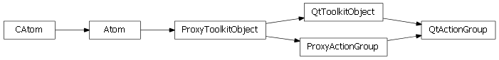

Bases: enaml.widgets.toolkit_object.ToolkitObject
A non visible widget used to group actions.
An action group can be used in a MenuBar or a ToolBar to group a related set of Actions and apply common operations to the set. The primary use of an action group is to make any checkable actions in the group mutually exclusive.
Whether or not the actions in this group are exclusive.
Whether or not the actions in this group are enabled.
Whether or not the actions in this group are visible.
A reference to the ProxyActionGroup object.

Bases: enaml.qt.qt_toolkit_object.QtToolkitObject, enaml.widgets.action_group.ProxyActionGroup
A Qt implementation of an Enaml ProxyActionGroup.
A reference to the widget created by the proxy.
Locate the QAction object which logically follows the child.
If the given child is last in the list of children, then the parent object will be invoked to find the QAction which follows this action group.
| Parameters: | child (QtToolkitObject) – The child object of interest. |
|---|---|
| Returns: | result (QAction or None) – The QAction which logically follows the position of the child in the list of children. None will be returned if a relevant QAction is not found. |
Handle the child added event for a QtActionGroup.
This handler will also add the widget to the parent widget, since a QActionGroup only serves as a management container.
Handle the child removed event for a QtActionGroup.
This handler will also remove the widget to the parent widget, since a QActionGroup only serves as a management container.
Bases: enaml.wx.wx_toolkit_object.WxToolkitObject, enaml.widgets.action_group.ProxyActionGroup
A Wx implementation of an Enaml ProxyActionGroup.
A reference to the widget created by the proxy.
Locate the wxAction object which logically follows the child.
If the given child is last in the list of children, then the parent object will be invoked to find the wxAction which follows this action group.
| Parameters: | child (QtToolkitObject) – The child object of interest. |
|---|---|
| Returns: | result (wxAction or None) – The wxAction which logically follows the position of the child in the list of children. None will be returned if a relevant QAction is not found. |